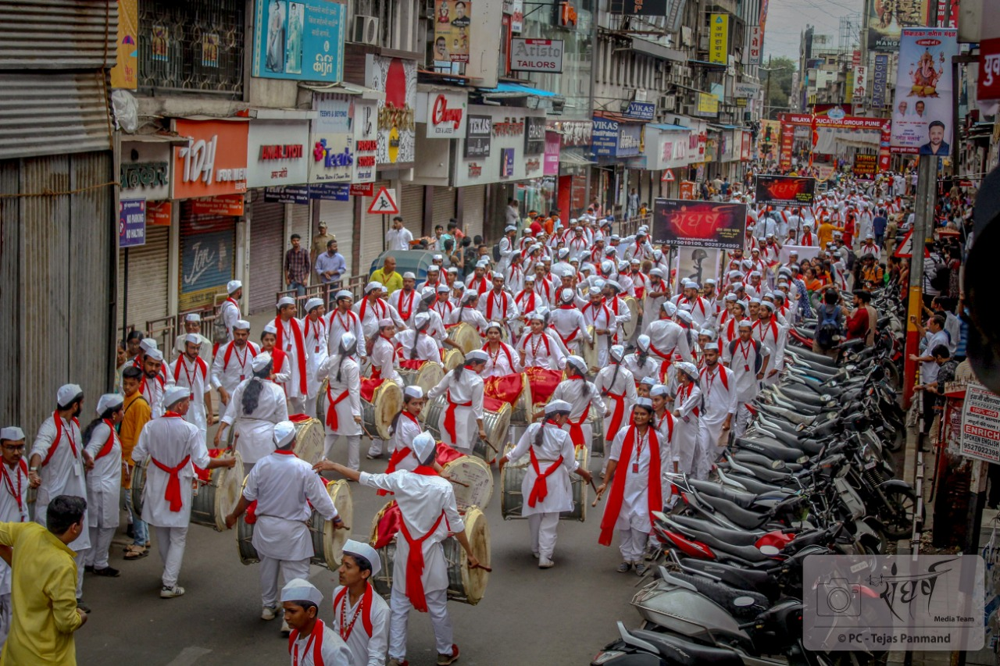
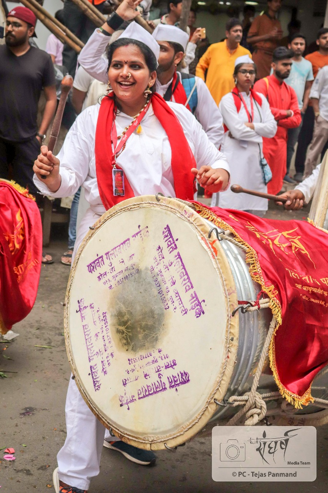
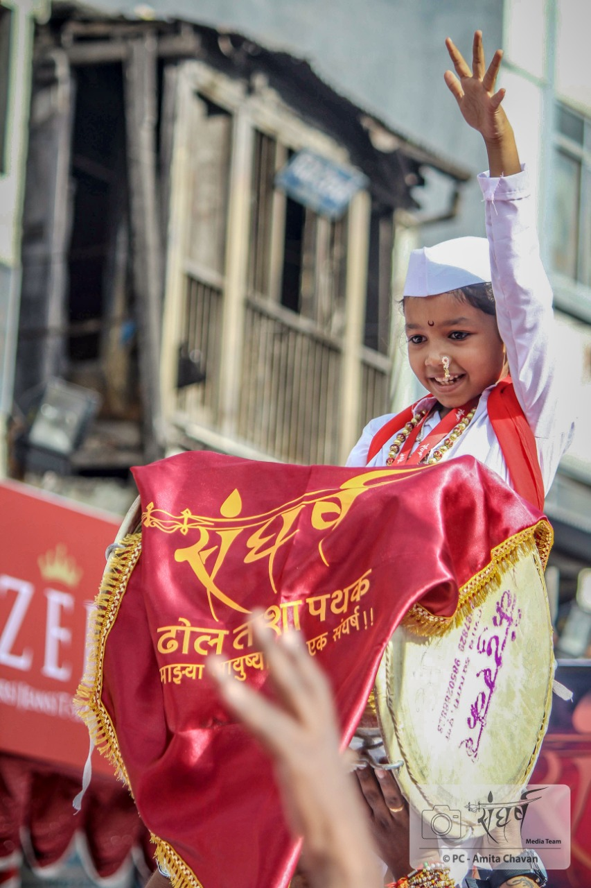
सुपारी - १ ला दिवस
श्री. कसबा गणपती - मानाचा पहिला गणपती (आगमन सोहळा) - संघर्ष ढोल ताशा
पथकाच्या (शिरपेचातला) सर्वात सोनेरी तुरा म्हणून संबोधीत केले तरी कमीच म्हणायचं!
एका वादकाने आपल्या पथकासाठी अभूतपुर्व- प्रामाणिकपणे केलेल्या प्रयत्नाचे बाप्पाने जणू दिलेला हा
प्रसाद. वादकांनी नियमितपणे केलेल्या कष्टाचे हे फळ म्हणजे हे मानाचे वादन. जितना बडा संघर्ष, उतनी
बडी जीत.
बाप्पाचे आभार मानावे तेवढे कमीचं, मानाची पहिली मिरवणूक- पुण्याच्या ऐतिहासिक मिरवणूक मैदानात
संघर्ष ढोल ताशा पथकाचे मावळे, तो क्षण, प्रमुख चौक श्रीमंत दगडूशेठ गणपती जवळ सलामी, लक्ष्मी रोडची
स्वारी अन तो जोश आणि उत्साह.
गांभिर्य, जबाबदारीने शाब्बासकीची ती मौल्यवान थाप.
संघर्ष हा अटळ होता, तो या दिवशीपण अपवाद नव्हता, ते म्हणजे नेतृत्व करणाऱ्या आमच्या वादकाचे
सहीसलामत कुर्ता मोक्याच्या जागी फाटणे व काही क्षणात तो पुन्हा मैदानात सक्षमरित्या उभा- भरपूर
काही सांगून जाते. छत्रपती शिवाजी महाराज, छत्रपती संभाजी महाराज आणि गणपती बाप्पा यांच्या कृपेने
हे क्षण आम्हाला पाहता आले.
श्री.कसबा गणपती-- अध्यक्ष, विश्वस्त, व सर्व गणेश भक्तांचे खूप आभार, धन्यवाद व चरणी, नतमस्तक.
When History met Culture...
Pune’s iconic Shri Kasba Ganapati, one of the most ancient temples in Maharashtra was installed by Chatrapati Shivaji Maharaj and Mata Jijabai in 1639. This temple and its surrounding Kasba Peth area is held in high esteem with lot of devotion from people all over Maharashtra as it is right in the heart of the city. Shri Kasba Ganapati - its local deity is known by many as the first known Ganapati idol that started off the prestigious 10-day Ganapati festival. This event is celebrated with lot of devotion and with a blend of cultural values and emphasis on social responsibilities that highlight the history of Maharashtra.
Sangharsh Dhol Tasha Pathak is known for its 3 main principles – Trust, Discipline and Sister-Brother bonding which we hold in very high esteem. We value our roots and our rich culture and these are the principles which have got us associated with one of the most famous Ganapati Mandals – Shri Kasba Ganapati in Pune.
For their prestigious procession that precedes the inauguration of the 10-day festival, Shri Kasba Ganapati in 2019 selected Sangharsh Dhol Tasha Pathak to join the procession along with another Dhol Tasha Pathak. We were 1 of the only 2 shortlisted of around 82 applicants who wanted to participate in this procession. It was a great honour and a start of something special for us.
On September 2, 2019, a red letter day for Sangharsh Dhol Tasha Pathak, we witnessed in heart of Pune City the merger of our rich culture and the history of the Manacha Pahila Shri Kasba Ganapati during a 3-hour long procession that crossed the heart of the city.
Our association with Shri Kasba Ganapati just got stronger after this day. We were proudly told that day by the management of the Shri Kasba Ganapati Mandal that they would want us back the following year as well. It was not just that. On January 28, 2020 during the Ganesh Jayanti festival which is celebrated with equal passion and festivity in Pune, Shri Kasba Ganapati invited us once again. So for the 2nd time inside 5 months, Sangharsh Dhol Tasha Pathak got the honour to salute and seek blessings from Pune's historic Shri Kasba Ganapati.
With the onset of COVID-19 and the fear of the pandemic, most celebrations during 2020’s Ganapati festival either got cancelled or were toned down. Shri Kasba Ganapati also honoured its commitment towards maintaining social responsibilities. On their special request, we visited the prestigious and historic Shri Kasba Ganapati Temple – the Gramdaivat which was the origin of Shri Kasba Ganapati’s history. At this historic venue on 22nd August 2020, with our small little team in its toned down volume but with renewed intensity and devotion, with all due consideration to safety norms over the COVID-19 fear, we paid our respects to our Lord.
Sangharsh Dhol Tasha Pathak feels blessed and we feel committed to come back strong in 2021...
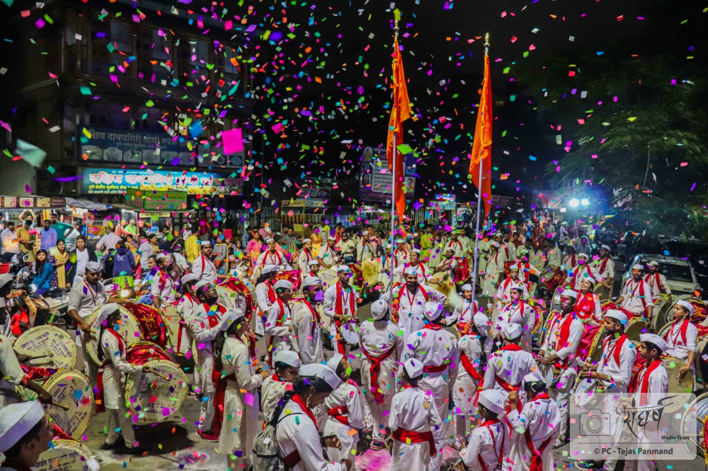
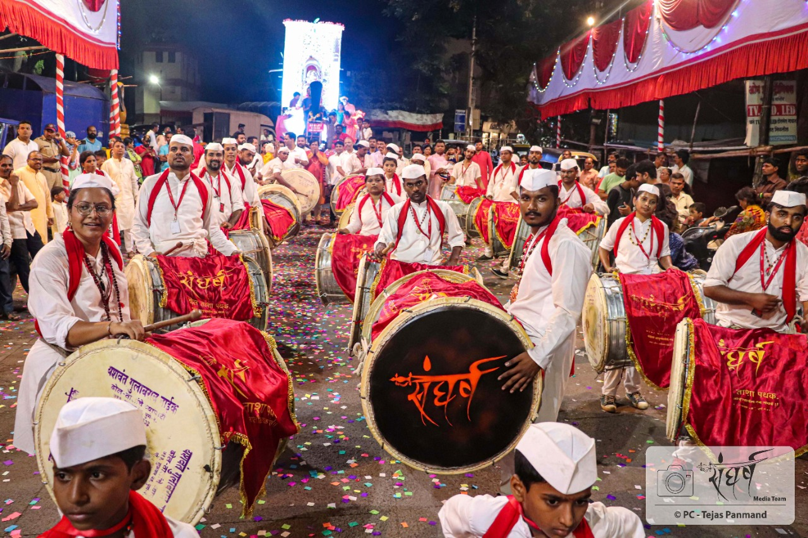
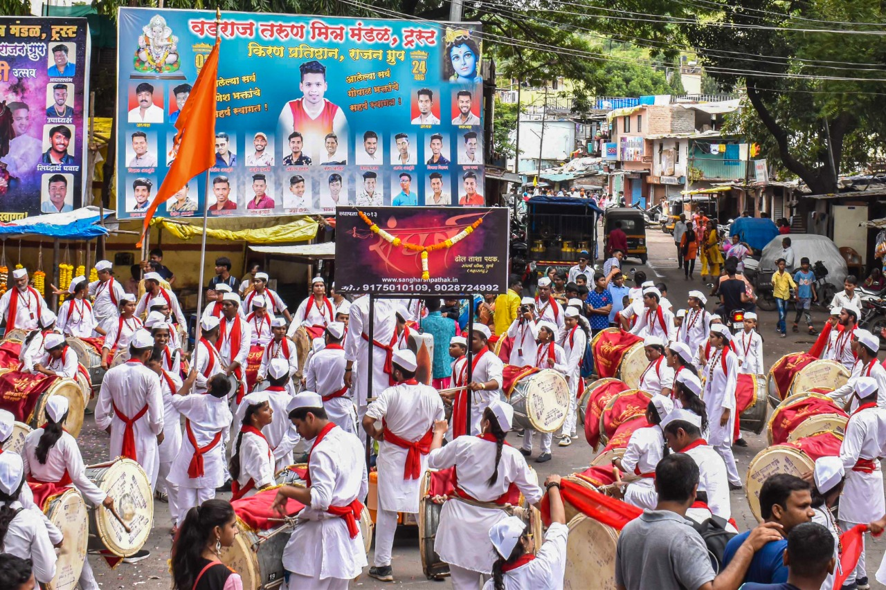
नातूबाग मंडळ, बाजीराव रोड - पुण्याच्या मुख्य रस्त्यावरुन निघणारी ही मिरवणूक
एकदम कडेकोट बंदोबस्त आणि प्रचंड गणेश भक्तांनी गजबजलेला रस्ता. पुणेकरपण गर्दी, वातावरण निर्मिती
प्रमाणे करतात म्हणजेच ज्या ढोल पथकाचे ठोके कडक तिकडे पुणेकरांची गर्दी.
श्री. कसबा गणपती आगमन सोहळानंतर त्वरीत ही मिरवणूक सुरु झाली. आमचे प्रसाद व अमित दादा तर कसबा ते
नातूबाग ढोल घेवून धावू लागले तसेच इतर वादक क्षणाचाही विलंब न करता आपल्या परीने कर्तव्य पार पाडत
होते.
ध्वजसंघातला आमचा आशुतोष दादा ताशा बांधून एक पाउल पुढे, वादन सुरु करण्याच्या तसेच या प्रसंगी
ऍम्ब्युलन्सला मार्ग मोकळा करुन देण्यातही संघ चुकला नाही. अशारित्या संघर्षाचा संघ आमचा.
जय भवानी मित्र मंडळ, पुणे - बाप्पाच्या आगमनाच्या दिवशी या वास्तुत संघर्षचे
वादन होणे हे जणू वेगळेच नाते. बाप्पाचे व संघर्षचे एफ.सी रोड पासून सुरु होणारी ही सुपारी जवळपास
सेनापती बापट रोडवर समाप्त होते.
श्री. कसबा गणपतीचे मानाचे वादना नंतर एक संघ या वादनासाठी अंकुशदादा व शशीदादाच्या नेतृत्वात कडक
उन्हात, संघर्षात बाप्पाची प्रमाणिक सेवा करण्यास यशस्वी झाला.
सलाम या संघाला व नेतृत्वाला!
हिंद मित्र मंडळ विशालनगर - हे वादन म्हणजे होम पिच वरचं वादन, दमदार म्हणजे दमदार- अनेक दमछाक सुपार्यांनंतर देखील एक वेगळाच जोश होता या वादनात, तसेच दोन पथकांचे सामुहीक वादन या सुपारीचे वैशिष्ठ्य.
बी.के डेव्हलपर्स, पिंपळे सौदागर - सालाबादप्रमाणे आमचं हे घरगुती गणपती बाप्पासाठी एक सुंदर वातावरणातील वादन. आयोजक कुटूंबाचं कौतुक व जल्लोष! आणि ही मॅरेथॉन सुपार्यातील ही चौथी सुपारी.
जरवरी पिंपळे सौदागर - गणेशोत्सवाचा पहिला दिवस म्हणजे अतिशय
उत्साहाचा आणि बाप्पाच्या मनभरून सेवेचा असतो. २०१९ च्या वादनाचा श्रीगणेशा झाला तो श्री कसबा
बाप्पाच्या दारात. 🙏🏻
हल्ली लगबगीचा असणारा गणेशोत्सवाचा पहिला दिवस यावर्षी सुद्धा तसाच होता. आम्हा वादनवेड्यांचे छोटे
छोटे संघ निर्माण केले. त्यांनी अनेक ठिकाणी बाप्पाची सेवा केली. असाच एक संघ FC रोड सुपारी गाजवून
दाखल झाला तो Jarvari Society पिंपळे सौदागर येथे. Society मध्ये झालेल्या स्वागताने वादकांना आलेला
थोडाफार थकवाही नाहीसा झाला व वादक पुन्हा एकदा वादनासाठी सज्ज झाले. अतिशय आपुलकीच्या व मंगलमय
वातावरणात अध्यक्ष अंकुश दादाच्या नेतृत्वाखाली वादन सुरु झाले. एकापाठोपाठ एक भन्नाट टोन्स सादर
करत बाप्पाचे स्वागत झाले.
रोज आयकॉन चा राजा पिंपळे सौदागर - रोज आयकॉन म्हणजे तर आमचं दुसरं घरच !! आमचे अध्यक्ष शशी दादांची सोसायटी. येथे आल्यावर समस्त प्रेक्षकांचा उत्साह बघून वादकांना सुद्धा वेगळीच एनर्जी मिळते व त्याच एनर्जीने वादन सुरू केले जरवरीत वादन केलेल्या संघाने. थोड्यावेळाने B.K.Devloper's ची सुपारी पूर्ण करून आलेला दुसरा संघही वादनात सामील झाला आणि वादनाला अजून स्फुरण आले. सोसायटी मेंबर्स चा प्रतिसाद नेहमीप्राणेच भरभरून होता. सर्व वादकांनी मनसोक्त वादन केले आणि बाप्पाचे स्वागत उत्साहवर्धक वातावरणात पार पडले.
Ivory Society, Park Street - मॅरेथॉन सुपारी मधील ही एक सुपारी.
संघ एकावेळी अनेक ठिकाणी, आणि इकडची जबाबदारी आमच्या डॉ. ताई व सोहम दादाकडे होती.
अक्षरशः प्रत्येक व्यक्तीचे पाय थरकत होते, असे वादन पथकाने केले व पुढील ठिकाणी सुपारींसाठी पुन्हा
सज्ज झाले.
सुर्योदय मित्र मंडळ रास्ता पेठ, पुणे - गणपती बाप्पाच्या आगमन सोहळयातील मॅरेथॉन ९ वी मिरवणूक म्हणजेच, ९ वं वादन. प्रचंड थकवा, जबाबदारी तसेच वादनाचे भान आणि सतत छत्रपती शंभुराजे समोर - संघर्षचे नामफलक आणि जोश. लहानांपासून मोठ्यांपर्यत सगळया संघाचे कौतुक करावं तेवढं कमी, एकदम उत्साहात ही मिरवणूक पोलिसांच्या वेळेच्या शेवटच्या ठोक्यापर्यंत सुरु होती.
विघ्नहर्ता मित्र मंडळ, पिंपरी - पिंपरीच्या सुपारीची वेळ होती ७ - ७.३० ला
संध्याकाळची. या वेळेस सुद्धा संघर्षने २-३ वेगवेगळ्या लोकेशन्स ला आपल्या वादनाने संपूर्ण आसमंत
दणाणून सोडले होते.
पिंपरीच्या वादनाचा अनुभव काहीसा न्याराच होता. गजबजलेला area, अंकुश दादाचे नेतृत्व आणि गर्दीला
वादकांपासून नेमक्या अंतरावर रोखून धरेल अशी संघर्षची तसेच विघ्नहर्ता मित्र मंडळाची सुसज्ज सपोर्ट
सिस्टम... अशा वातावरणात अगदी दमदार आणि तडफदार वादन सुरू झाले. पिंपरीच्या अरुंद वाटांवर अनेक
पथकांची बाप्पाच्या आगमनासाठी जणू मैफिलच जमली होती. अशा वातावरणामध्ये महत्त्वाचे असते ते आपल्या
पथक प्रमुख आणि वादकांची साथ धरून चालणे.
अनेक पथकांचे वादन सुरु असतांनाच आमच्या अध्यक्षांचा टोलनाद अगदी टिपेला पोहोचेला होता. तो नाद ऐकून
अक्षरशः रोमांच उभे राहिले.
विघ्नहर्ता मित्र मंडळाचा जोश बघून वादकांना अधिकाधिक स्फुरण चढत गेले. सगळ्यांचा उत्साह अगदी
शिगेला पोहोचला होता.
आणि श्री गणरायांचे आगमन झाले.
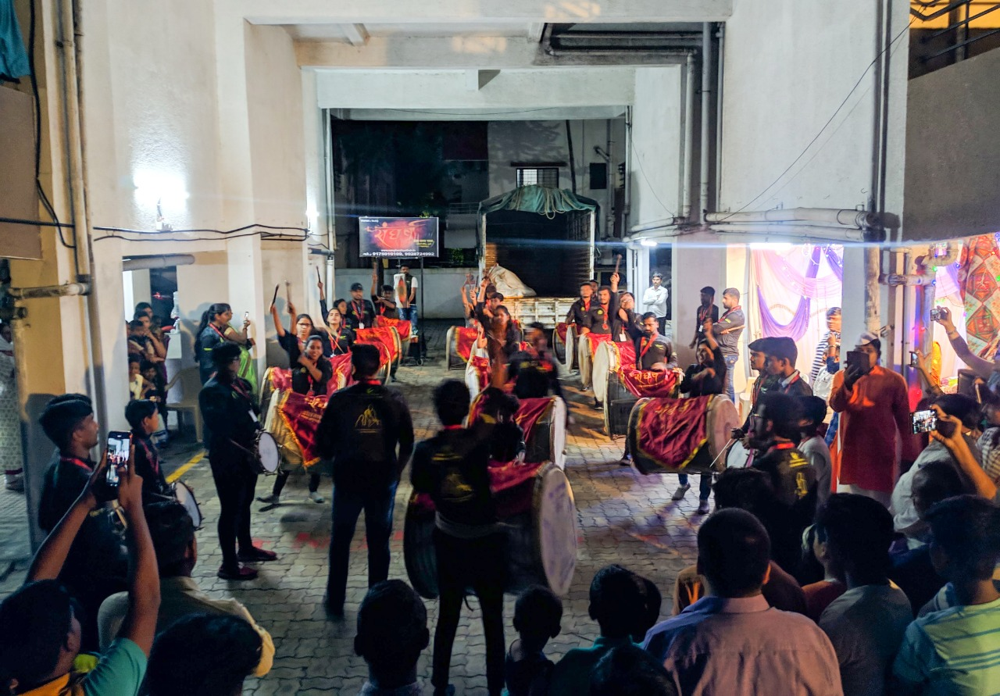
सुपारी - ५ वा दिवस
सुर्यवैभव सोसायटी, थेरगाव - आमचा लाडका वादक, स्वप्नील
चिमेगावकर च्या सोसायटी मध्ये झालेले हे वादन.
सोसायटीतील प्रत्येक व्यक्तीला खाली घेऊन आले. त्याचप्रमाणे आपल्या वादकाच्या घरी वाजवण्याचा आनंद
काही औरच.
अनेकांसाठी ही अनपेक्षित मेजवानी होती.

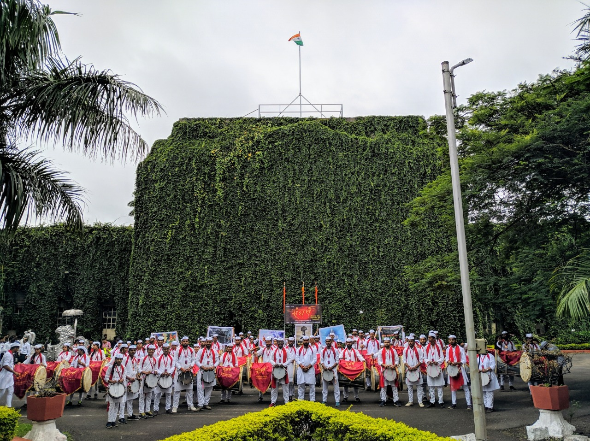
सुपारी - ६ वा दिवस
पुणे बार असोसिएशन-- जिल्हा व सत्र न्यायालय, शिवाजीनगर - न्यायदालनाच्या भूमीत वादन मिळणे म्हणजे एक वेगळाच जबाबदारीयुक्त जोश, सुरुवातीला न्यायालय आवारात शिरल्यावर वादन होईल असे वाटत नव्हते, पण प्राचीन काळातील अशोका हॉल जवळील नैसर्गिक वातावरणात जसा ठोका पडला तसा सर्व वकील बंधु स्टाफच्या चेहर्यावरचे हाव भाव बघुन निश्चित झालं की, इथे ARGUMENT नाही होणार पण निर्णय आपल्या पक्षात लागणार. जिल्हा व सत्र न्यायालयाचे प्रमुख न्यायाधीशांनी पथकाचे कौतुक व सत्कार केला. हे दृश्य गगनात मावेना असे होते.
बालेवाडी - एका आय.टी कंपनीच्या गणेशोत्सव विसर्जन मिरवणुकीसाठी केलेलं हे वादन. सोबत आय.टी मधील मंडळींचा जोश.
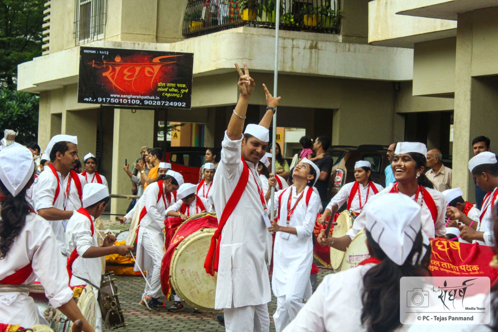
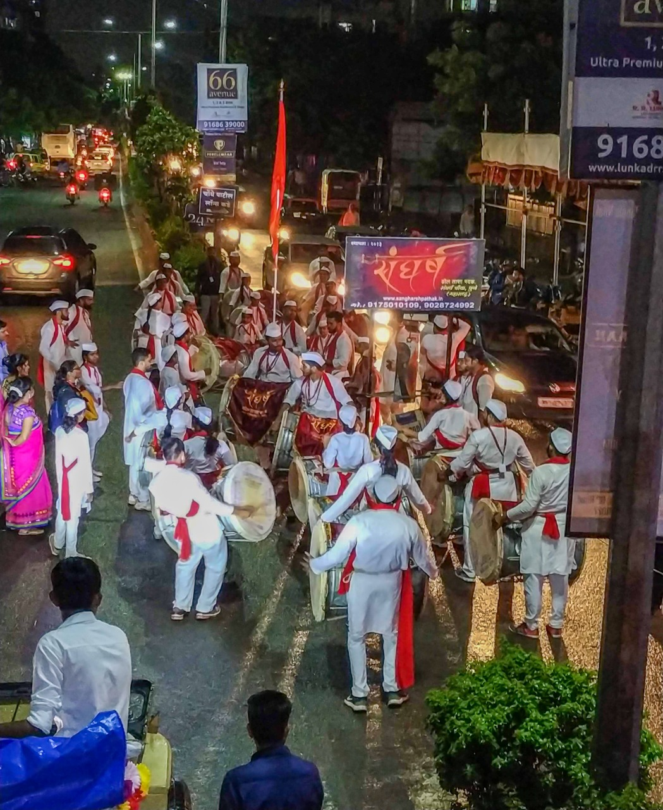
सुपारी - ७ वा दिवस
जय हिंद मित्र मंडळ, सांगवी - सांगवीतील प्रमुख रस्त्यावर येणारी ही मिरवणूक व
त्याचबरोबर पथक व D.J. मधील चुरस आणि त्यात संघर्ष म्हटलं की एक वेगळंच वातावरण सांगवीकरांना
अनुभवायला मिळाले.
पुर्ण क्षमते पलीकडे आपले वर्चस्व सिद्ध करीत, संघर्षने हे मैदान गाजवले.
Sapphire Society, Park Street - पार्क स्ट्रीट म्हणजे आमचे हक्काचे व्यासपीठ, अनेक वादनं व एक वेगळा परिचय. जोरात आणि जोशात झालेले हे वादन.
समर्थ मित्र मंडळ, जगताप डेअरी - वादन सुरु होणार आणि पाऊस सुरु होणार अशी चढाओढमध्ये संघर्षने संघर्ष करुन म्हणजे ताडपत्री ओढून वादन सुरु केले व दमदार असे वादन केले.
मिलेनियम सोसायटी, पिंपळे सौदागर - आपल्याला प्लॅनेट मिलेनियम सोसायटी चे कमिटी
मेंबर्सने बाप्पाची सेवा करायची संधी दिली.
सातव्या दिवशी आपल्या बाप्पाच्या विसर्जनासाठी संघर्ष ढोल ताशा पथकाने पूर्ण जोश मध्ये वादन
केले.
ताशाची तर्यी आणि ढोलाच्या ठोक्यांनी लोकांना नाचायलाच लावले.
सर्व लोकांनी खूप एन्जॉय केले आणि त्यांचा जोश बघण्यासारखा होता.
आजुबाजूचे पूर्ण वातावरण एकदम एनर्जेटीक आणि पॉझिटिव्ह झाले होते.
सुपारी - ८ वा दिवस
बालकल्याण केंद्र, पुणे - संघर्ष ढोल ताशा पथकाचे हे FAVOURITE वादन, वादक सुट्टी घेतात किंवा हा दिवस मॅनेज करतात कारण वादन असते Special for Special Type Of Kids अर्थात बालकल्याणच्या कार्यात थोडासा हातभार. भावनिक हृदयस्पर्श करणारे हे वादन. नतमस्तक बालकल्याण & Special Kids
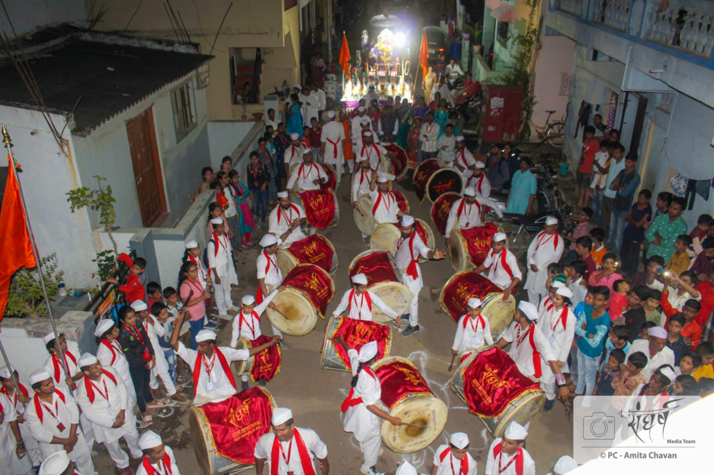
सुपारी - १० वा दिवस
रहाटनी सुपारी - गणेश उत्सवाचा १० वा दिवस. रहाटनीचे वादन.
या वादनाच्या वेळी ताई आणि बाल वादकांची संख्या जास्त होती. वादनाला सुरुवात झाली आणि लगेच वातावरण
बदलले. सगळीकडे जल्लोश आणि उत्साह.
आजुबाजुच्या घरांमधुन सगळे कौतुकाने बघत होते. खास करुन बाल वादकांनी खुप छान वादन केलं.
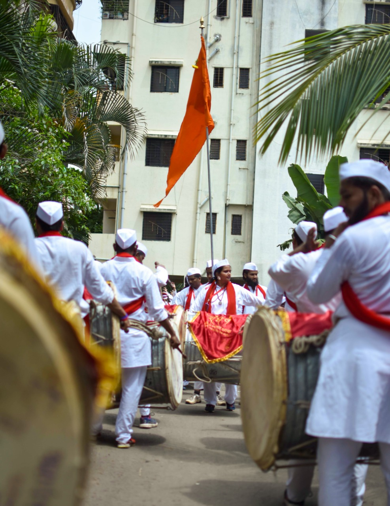
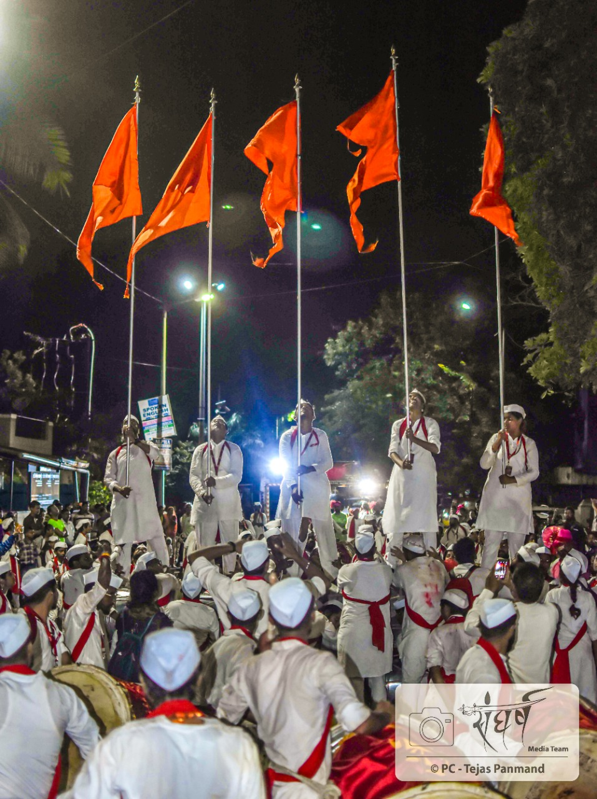
सुपारी - ११ वा दिवस
नवनाथ प्रतिष्ठान ट्रस्ट, कोंढवा - कोंढवा येथील वस्तीमधील स्थिर वादन, मग पुढे मिरवणुकीत रुपांतर झालेलं भन्नाट वादन. वादन पाहण्यासाठी झालेली गर्दी व भक्तिमय वातावरण.
निओ सोसायटी, वाघोली - लाडक्या बाप्पाला निरोप द्यायला सगळेच सज्ज होते. आणि मग आम्ही पोहचलो. वादन सुरू होताच society च्या लोकांचे पाय आपोआप थिरकायला लागले. त्यांना बघुन सगळ्या ताई दादांचा जोश वाढला. आणि हा सगळा सोहळा बघुन मेघराजही गरजला. अचानक पाऊस सुरु झाला. Society ची मंडळी जरा नाराज झाली. पण तेवढ्यात volunteer ताई - दादा ताडपत्री घेऊन आले आणि मग पुन्हा तेवढ्याच जोशात वादन झाले.
जरवरी सोसायटी, पिंपळे सौदागर - जर्वरी सोसायटी मधील हे वादन सोसायटीला पूर्ण
प्रदक्षिणा घातलेलं वादन.
शशी दादा च्या नेतृत्वाखाली झालेले हे वादन.
आयोजकांकडून कौतूक व आभार.
बी. के. डेव्हलपर्स, पिंपळे सौदागर - आगमन आणि विसर्जनासाठी संघर्षने येथे दमदार
वादन केले.
बाप्पाची आरती संघर्षच्या वादकाकडून आयोजकांनी करवून, मिरवणूक सुरू केली. तसेच पिंपळे सौदागर च्या
प्रमुख रस्त्यावरून ही मिरवणूक पुढे गेली.
Home Pitch वरचे हे वादन वेगळीच ताकद देऊन गेले.
प्लुमेरीया ड्राइव्ह, रावेत - ताईंनी गाजवलेली ही सुपारी.
छोटं पथक पण जोश व आवाज त्या पलीकडचा.
उपस्थितांच्या जोशामु़ळे ठरलेल्या वेळेपेक्षा जास्त वेळ केलेले वादन.
कौंतेय हौसिंग सोसायटी, निगडी - अकरावा दिवस म्हणजेच आपल्या लाडक्या बाप्पाला
निरोप देण्याचा दिवस आणि
सर्व वादकांसाठी कुठेतरी मन भरून येणारा.
पण तरीही वादकच हा, आपल्या बाप्पाचे आगमन असो की त्याला निरोप द्यायची वेळ असो वादन हे पुर्ण जोश,
एनर्जी, ताकद आणि उत्साहातच करणार.
अशीच ही आमची शेवटच्या दिवसाची शेवटची सुपारी, weekday होता पण तरीही बाप्पाला निरोप द्यायला सर्व
वादक कुणी शाळा, काॅलेज, ऑफिसला सुट्टी घेऊन वादनासाठी सज्ज.
दिवसभर पाच सुपारींमध्ये वादन करूनही या सुपारीमध्येही एक नवा जोश, उत्साह, ताकद होती. सर्व ताई
दादा बेधुंद होऊन वादन करत होते. शेवटी ताईंची सलामी आणि वादन, अप्रतिम तो क्षण आणि काय असले भन्नाट
वादन केले सर्व ताई-दादांनी की फूल राडाच.
आयोजक आणि सर्व प्रेक्षकरूपी लोकांचे त्यांनी दिलेल्या दाद आणि उत्साहासाठी खूप धन्यवाद व आभार!
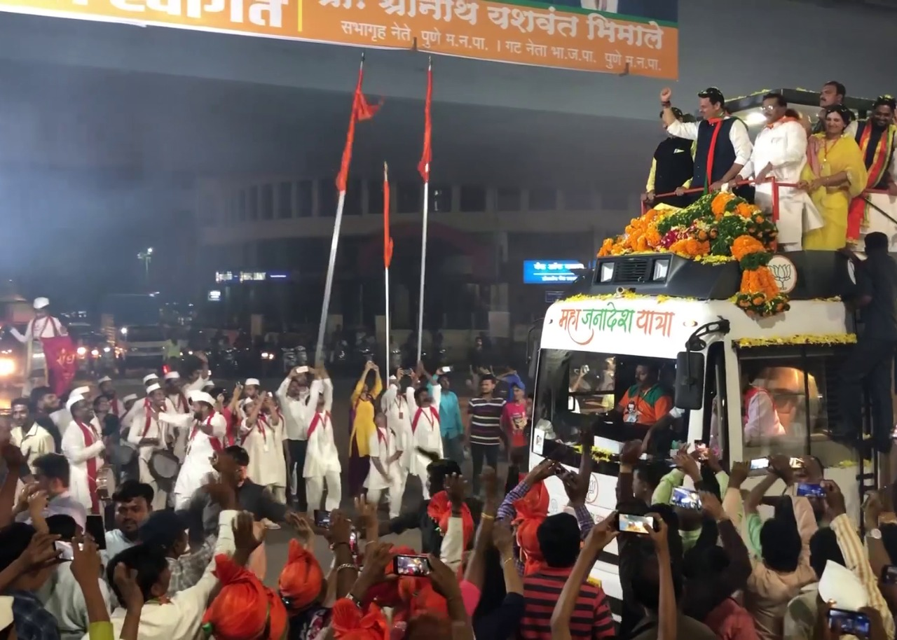
सुपारी - १३ वा दिवस
मा. मुख्यमंत्री देवेंद्र फडणवीस स्वागत, पुणे - मा. मुख्यमंत्री श्री. देवेंद्र फडणवीस यांच्या हातवार्यातून ही या वादनाची जणू पावती. वातावरण निर्मिती ब जोश बदद्ल संघर्ष पथक नेहमी अग्रेसर राहिले आहे.
मा. मुख्यमंत्री देवेंद्र फडणवीस स्वागत, गुडलक चौक - पुण्याचे सर्वात लोकप्रिय स्थळांपैकी एक म्हणजे गुडलक चौक, या मुख्य रस्त्यावर वादन व मुख्यमंत्र्यांच स्वागत हे दृश्य बघण्यासारखे होते. त्यात संघर्ष पथकाची महासलामी उपस्थितांचे कौतुकास पात्र ठरली.

PCDA, Southern Command
भारतीय सैन्य दलासाठी अर्थात त्यांच्या भूमीत वादन मिळणे म्हणजे आमचे
भाग्यचं.
सैन्य दलातील वरिष्ठ व उच्च अधिकारी तसेच त्यांच्या स्टाफ समोर हे वादन एकदम दिमाखात पार पडले.
एक वेगळा अनुभव व समाधान.
भारत माता की जय!!!
जय जवान!!!
सलाम!!!
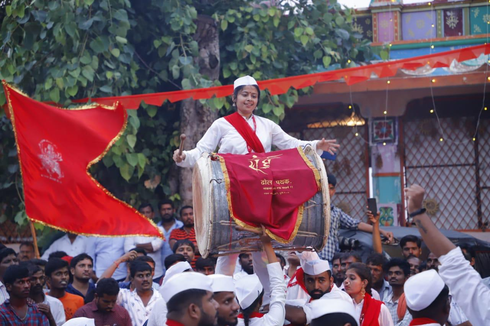

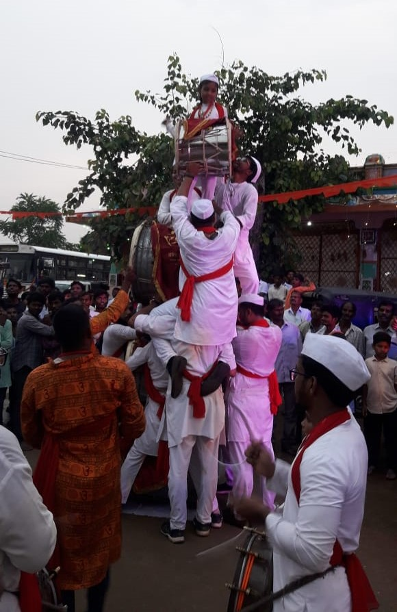
हैद्राबाद
Sangharsh Dhol Tasha Pathak was already making waves by 2019, having just had a very successful and satisfying Ganeshutsav in Pune. That’s when Hyderabad came calling again and we had already been there twice before in 2015 and 2016. Our association with the people of Southern part of India was just about to get strong once more with Bijapur (3 times) in Karnataka from 2014, 2015, 2017 fresh in our minds, so off we were back on the way to Hyderabad.
This was going to be a challenge. Right from assembling a team with the peak of school/college exams approaching, those on jobs had to re-adjust work schedules, take time off and give a commitment. It was a mammoth exercise managing the operations part, right from finances, transport, our practice and getting all simple things in place. But we were upto it having had the experience of done this previously. It was once again our team work on display and nothing was left for last minute surprises.
Getting smarter with managing the transport and with a view to think forward, we went into multiple SUVs this time and not just 1 large bus for all. The idea was, we were to perform back-to-back on 2 days, not everyone could commit time for both days, some had to return early and then there were few or most of them who wanted to spend the extra day in Hyderabad to have a view of the beautiful city. Couple of our Tais and our 2 little ones could also stay just for a day to manage work and school commitments, we made sure, they got a decent and safe train journey arranged for the return.
Onwards to Hyderabad was as always a night journey which we always relished. Having homemade food which we all shared with relish at one of the stops we had for fuel, the journey felt just like a stroll despite the long distance. Early morning arrival into Hyderabad and the drive on the modern highways part of the NH network was a pleasant experience for many who were travelling here for the first time. We had a great breakfast on arrival arranged by our hosts, the traditional Idli and Sambar and it was a blessing, we could not forget. There were just a couple of hours we had for rest and changeover before getting ready for the procession of Goddess Durga which is worshipped with lot of tradition and lot of festivities in this part of India. We were fortunate to be a part of it.
Our Supari started around noon, the weather was fine although it was getting hotter by the day. We were greeted with lot of applause all along the way all through the day as we ended the procession round about 6 p.m. It also did rain and rained heavy for most of the afternoon and as was our tradition, we never stopped our performance. With our team well organised to provide the traditional shelter from rains using our famous ‘taadpatri’, we ensured the show never stopped.
Post evening, we were again treated to traditional Biryani by our hosts and it was a dinner that we all enjoyed. It was also time for us to say a goodbye to our Tais and the 2 little ones leaving us as they had a midnight train to board for Pune. The rest of us had a switchover to another part of Hyderabad where we were to perform the next day. The bodies were tired, but the enthusiasm never faltered nor did the spirits...
It was a pleasure being in Hyderabad on this special occasion and we all obliged with our rich traditional values on display... More was to follow the next day, but that’s another member’s story.....
Sangharsh.....
Ranjeet Bhatia

हैद्राबाद
संघर्षचं हैद्राबाद मधील हे आजपर्यंतचं चौथं वादन. नवरात्रीमधील हे भव्य
उत्सव मंडळासमोर वादन करायचा मान संघर्ष परिवाराला मिळाला. Back to Back हा संघर्ष जणू संघर्ष
परिवाराला नवखा नाही .उपस्थित प्रेक्षक वर्ग तासनतास संघर्ष बरोबर आनंदाने व एकजुटीने उभा होता. जोश
वाढवण्यांच मोठं काम करत होता. ताईंना विशेष कौतुक व प्रेम भेटले. पुन्हा एकदा खडतर प्रवास यशस्वी
करुन दाखवला.
बात अलग है, संघर्ष!
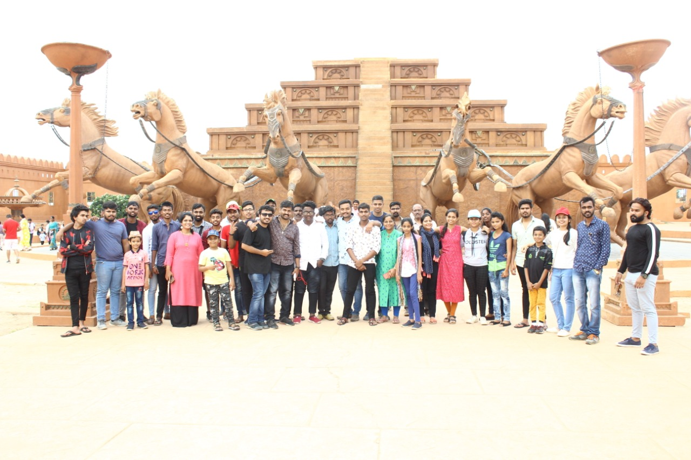
रामोजी फिल्म सिटी, हैद्राबाद
आयुष्यात अनेक स्वप्न असतात पण त्यात पर्यटन स्थळं काही अपवाद नाही. अनेकांनी रामोजी फिल्म सिटी,
हैद्राबादला वादन करायला जाणार म्हंटलं की एकदम जिभेच्या ओठा वर असं झालं.
संघर्षची ओळख व स्वभावाला साजेसे असं immediate प्लॅन हैद्राबादच्या सुपारीनंतर पथकाने आगोदर घोषित
केला. संघर्ष म्हंटल की, वेगळं काही तरी तसेच वादकांची काळजी, उत्साह, आपुलकी, जिव्हाळा असणारं
पथक.
एक भव्य जगप्रसिध्द स्थळाला पथकामुळे भेट देता आली याचा आनंद व गर्व काही वेगळाच वादकांच्या
हृदयात.
संघर्षच्या हृदयाला पण एक अनोखं समाधान मिळालं कारण,
वादकांमुळे हे पथक खंबीररित्या उभं आहे.
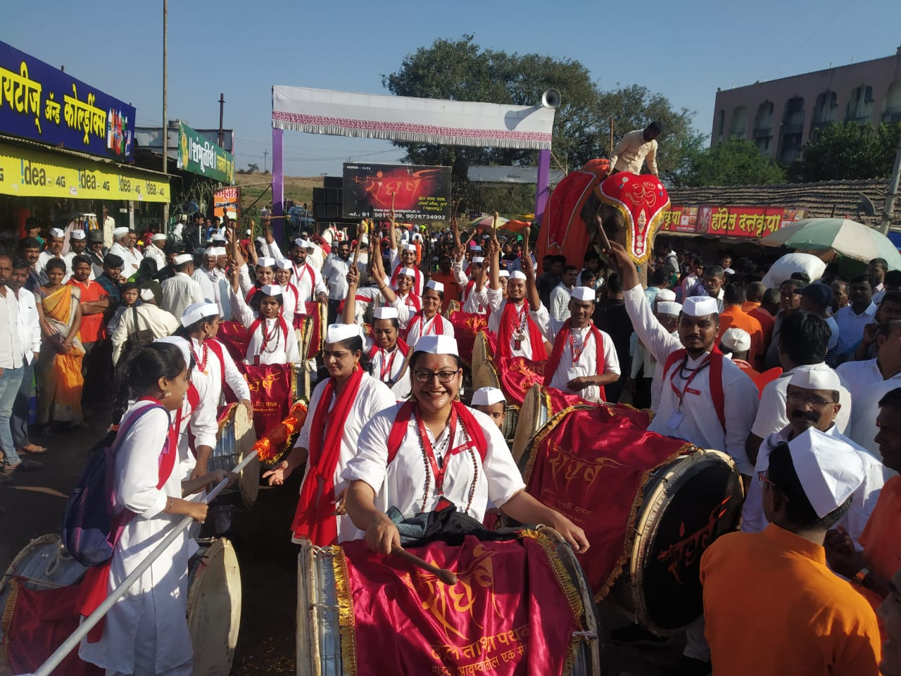
श्री दत्त मंदिर, नारायणपूर
दत्त मंदीर श्री. क्षेत्र नारायणपूर येथे सालाबादप्रमाणे वादन मिळणे व करणे हे आमचे भाग्य. अगदी पालखी रथासमोर सुरु होणारे हे वादन ते शेवट मंदीर गाभार्यात होणारे वादन म्हणजे एक वेगळाच अनुभव. त्याचबरोबर पुन्हा एकदा पथकाला प्रथम पारितोषिक - (ढोल ताशा स्पर्धेमध्ये) एक वेगळाच जोश आणि ताकद देऊन गेले.
गणेश जयंती, मानाचा पहीला श्री कसबा गणपती
श्री.कसबा गणपती विश्वस्त मंडळाकडून पुन्हा संधी मिळणे म्हणजे आम्ही
निशब्दच. विश्वस्त मंडळाचे आभार मानावे तरी कसे, खास करुन श्रीकांत शेटे व अक्षय ढेरे दादा यांचे
आम्ही ऋणीच.
पुन्हा एकदा संधीचं सोनं केलं व संघर्ष पथकाच्या शिरपेचातला अजून एक सोनेरी तुरा. एक वेगळा
आत्मविश्वास व अभिमान संघर्षकर असल्याचा.
बाप्पाचे खूप आभार! गणपती बाप्पा मोरया!

शिवसाम्राज्य युवा प्रतिष्ठान, छत्रपती शिवाजी महाराज जयंती, चिंचवडगाव
कोरोनाचा शिरकाव आणि ठरलेलं हे वादन, हो की नाही? अशा परिस्थितीत झालेलं.
खुपच मोठ्या काळाच्या वादनासाठी लागणारा हा ब्रेक, अशी पुसटशी कल्पना न भूतो ना भविष्यती.
हे वादन चिंचवड गावात अनेक प्रमुख ठिकाणी सलामी, रिंगण परिपूर्ण वादन होते.
एक बलाढ्य संघ, संघर्ष पथक म्हंटले की संघर्ष हा अटळ.
मग ते वादन असो किंवा कोरोना.
उत्तम अशा या वादनानंतर अनेक महीने वादनाला लागलेला हा ब्रेक व त्यानंतरची परिस्थिती ही सांगायची
गरज नाही.